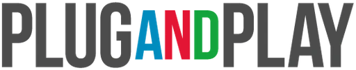

Plug and Play APAC
Plug and Play APAC — global innovation platform; runs Horizon Philippines and sector accelerators (fintech, health, etc.)
Plug and Play APAC is the regional arm of one of the world's largest innovation platforms. It runs sector accelerators (fintech, health, and more) across Singapore, Indonesia, Thailand, and the Philippines, including the Horizon Philippines program connecting startups with corporates and investors.
- Organization
- Plug and Play APAC — global innovation platform; runs Horizon Philippines and sector accelerators (fintech, health, etc.)
- Coverage
- International
- Funding / award
- Accelerator programs (corporate matching) + selective investment; seed–Series A ⚠️ investment dilutive
- Funding stage
- Seed, Series A
- Sector focus
- Fintech, Healthtech, Sector-agnostic
Qualifications & eligibility
- Tech startups (seed–Series A) in focus sectors with corporate-innovation fit.
Funding / award
Primarily accelerator programs (mentorship, corporate matching, investor access) plus selective direct investment (seed avg ≈USD 1.6M, into Series A).
⚖️ Equity note: Program participation may be non-dilutive, but any direct Plug and Play investment is for equity.
Key dates & deadline
Cohort-based — sector programs open on their own schedules (3–6 months).
📅 Forecasted application window: Recurring sector cohorts through the year.
How to apply
Apply to an open program at plugandplayapac.com/programs.
Apply / contact
Sources & references
- plugandplayapac.com/programs
- newsbytes.ph/2023/11/24/us-venture-firm-inks-pact-with-dict-to-create-colla…
- philstar.com/business/2024/04/20/2348957/dti-teams-plug-and-play-help-start…
Details are drawn from public records and the sources above, July 2026.
Startupreneur Innovation Hub · synced from the Notion catalog (July 2026) · status: published.